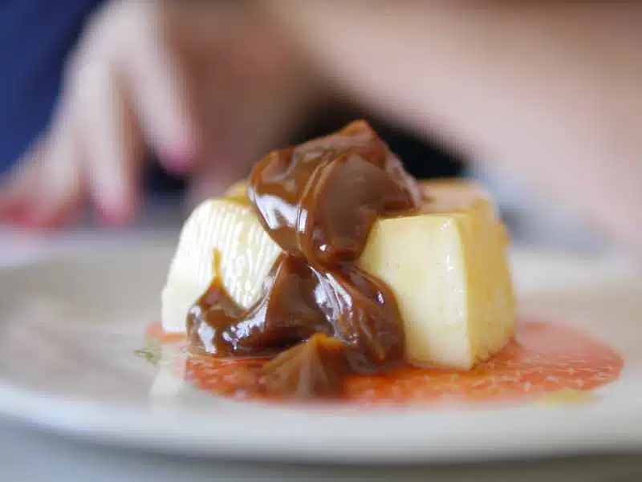

Flan casero con dulce de leche
Ingredientes
- 5 huevos
- 500 ml de leche
- 150 g de azúcar
- 1 cucharadita de esencia de vainilla
- Caramelo: 100 g de azúcar + 2 cucharadas de agua
- Dulce de leche para acompañar
Preparación
- Para el caramelo: derretí el azúcar con el agua en una sartén hasta que tome color dorado. Volcá en el molde cubriendo la base.
- Batí los huevos con el azúcar y la vainilla. Agregá la leche y mezclá bien sin espumar.
- Verté la mezcla sobre el caramelo. Cociná a baño maría en horno medio (160°C) por 45-50 minutos.
- Dejá enfriar, llevá a la heladera al menos 3 horas y desmoldá con cuidado.
🍮 Consejo Paulinesco: siempre acompañá con una buena cucharada de dulce de leche… o dos, nadie juzga.